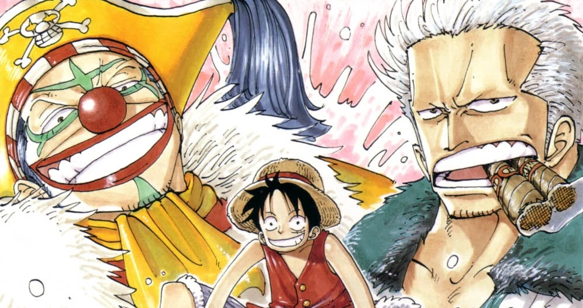

The Straw Hat Pirates stop at the city of Loguetown, where Gold Roger was born and executed, to get supplies before heading to the Grand Line. However, a powerful Marine captain, as well as some old enemies, stand in their way.
Luffy's First Bounty
The arc starts off with the Straw Hats lounging around on the Going Merry's deck when a flyer slips out of the newspaper Nami is reading, showing the Beli30,000,000 bounty on Monkey D. Luffy's head. Luffy is more than overjoyed with it, though Nami tells him it will mean more stress for the crew now that people will be after him. Zoro then spots an island, which Nami points out to be Loguetown, the last stop in the East Blue before the Grand Line, as well as the birth and deathplace of the famous pirate, Gold Roger. The crew decides to stop off there to grab supplies.
Meanwhile, the bounty poster reaches Luffy's hometown. The villagers are more than happy that Luffy is fulfilling his dream, though the mayor, Woop Slap, who has always been against Luffy becoming a pirate, thinks it is more like destiny than a dream. Meanwhile, Dracule Mihawk also delivers the poster to Shanks, who celebrates Luffy's coming with a party.
New and Old Faces: White Hunter Smoker and Buggy the Clown
Back in Loguetown, Zoro, while shopping for new swords to replace the ones Mihawk destroyed, has his first meeting with Tashigi, who, much to Zoro's unease, bears an uncanny resemblance to his old friend, Kuina. Tashigi helps him pick out new swords, identifying one as Sandai Kitetsu after Zoro chooses it. The shop's owner, Ipponmatsu, refuses to sell the sword to Zoro, pointing out the curse associated with it. Zoro decides to test his luck against the blade's curse, holding out his arm as he throws it in the air. Surprisingly, the blade circles around his arm and lands without cutting it off. Out of respect for Zoro's luck and skill, Ipponmatsu allows him to keep the blade, before also giving him Yubashiri, the family heirloom and the best sword in his shop.
While this is going on, Sanji buys a gigantic fish for the crew; Usopp purchases some more supplies, ammo, and new goggles; and Nami gets a bundle of clothes.[4] Luffy, meanwhile, goes to check the execution stand where Gold Roger was executed. While he climbs and admires the view from the stand, a woman calls out to him, seemingly recognizing Luffy, though he has no idea who she is. When part of the fountain in the town square breaks off and hits her, the debris just slides right off her body. She reveals herself to be Alvida, the first pirate Luffy came across on his journey. Only now, she has eaten the Sube Sube no Mi, causing her figure to change dramatically. She is not alone either, as another familiar pirate makes himself known: Buggy. Cabaji ambushes Luffy on the platform and puts him in shackles, while Buggy's pirates hold the town square hostage. Buggy declares that this is Luffy's execution.
At the Marine base in town, one of the men reports to his captain about the pirate ongoings in town. It is here we meet Captain Smoker, who has a reputation of never letting a pirate leave his town uncaptured, as he decides to wait for Luffy to be executed before moving in. The rest of the Straw Hats also get wind of what's going on and split up, with Zoro and Sanji going to rescue Luffy, while Nami and Usopp ready the ship to leave, as Nami has detected a storm approaching the island.
The Unexpected Rescue: Enter Dragon
Zoro and Sanji reach the execution area and try to fight their way through Buggy's pirates, but it doesn't look like they will make it as Buggy begins to bring his sword down on Luffy's head. With all seeming lost, Luffy smiles and tells his two friends that it looks like the end for him. However, a bolt of lightning hits Buggy's sword at the last second, destroying the platform and freeing Luffy with not a scratch on him as he, Zoro, and Sanji then make for the Going Merry. Smoker, who was watching, seems disturbed that Luffy laughed in the face of death, realizing that it was very similar to Gold Roger before he was executed.
Buggy, his crew, and Alvida, after recovering from the shock, try to make their escape, but are quickly defeated by Smoker and captured by the Marines. Nami and Usopp reach the Going Merry and quickly take down Mohji and his lion Richie, who were trying to burn down the ship.
The other Straw Hats also run into opposition in the form of Tashigi, angry that Zoro "tricked" her, causing him to stay behind and fight her. Smoker confronts Luffy and Sanji, who are unable to strike him due to his Devil Fruit powers.
However, the two are saved by a mysterious figure, allowing Luffy, Zoro, and Sanji to reach the ship unhindered. Smoker and Tashigi decide to abandon their posts to chase after them. Meanwhile, Buggy and his crew, who managed to escape the Marines during the fighting, decide to also head for the Grand Line to pursue Luffy.
The Journey Continues: To the Grand Line!
With the storm guiding them and a lighthouse in sight, the Going Merry is soon nearing its long-awaited destination. As the ship nears the entrance to the Grand Line, the Straw Hats perform a "ceremony" of sorts by placing one foot on a barrel and reciting their dream: Sanji to find the All Blue, Luffy to become the Pirate King, Zoro to become the world's strongest swordsman, Nami to draw a world map, and Usopp to become a brave warrior of the sea.